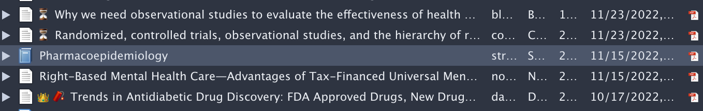

Code
/bin/bash -c "$(curl -fsSL https://raw.githubusercontent.com/Homebrew/install/HEAD/install.sh)"Working with a new computer can be great fun. However, I repeatedly forget to my favorite programs and settings that I frequently use. Therefore, I built this little thing to help my future self out and maybe even someone else. I will start with most important settings on a new MacBook.
[] Uncheck everything
Remove
Recents
AirDrop
On My Mac
Recent tags
[x] Show all filename extension
[ ] Show warning before changing an extension
[x] Keep folders on top in windows and on Desktop
Choose column view for every directory
Show Status Bar
Show Path Bar
Show Tab Bar
Add the New Folder icon to the toolbar
-> Pointer Control -> Trackpad Options -> Use trackpad for dragging -> three finger drag
I don’t use the Dock at all. It takes up screen space, and I can use Alfred to launch apps and AltTab to switch between apps (all using the keyboard). I make the dock as small as possible and auto hide it.
Remove everything possible
Don’t show recent apps/docs
Shrink size to minimum
Auto hide and show
Move to the right
All my apps will be installed using Homebrew, the best package manager for Mac. Before installing it, it can be a good idea to remove the preinstalled apps that you do not need and where removal is possible. Install it using the terminal and enter the following line:
Then copy, paste and run the three lines of code that are presented at the end of the installation. From now on, go to brew.sh to retrieve the commands to install your favorite apps. A list of apps can be saved in a txt file and installed from there.
Iterm2 is the nicest terminal for Mac. I don’t use it very much but way nicer than the native terminal app
In your mac terminal, run:
Appearance
Profiles
Default
General -> Working Directory -> Reuse previous session’s directory
Colors -> Basic Colors -> Foreground -> Lime Green
Text -> Font -> Anonymous Pro You can download this font here. (Unzip, double click on the anonymous pro.rft, drag and drop all other with same file extension there. I use this font in VS Code as well)
Text -> Font Size -> 24
Keys -> Key Mappings -> Presets -> Natural Text Editing (This allows me to use the keyboard shortcuts I know and love inside of iTerm2)
I am also using bash in iterm, check this source for some guidance and to see that I only copied stuff.
This allows you to create shortcuts to move windows and change sizes. I use it all the time. I used Magnet before, however, this is an open source and free version and is therefore preferred.
Save below and import it the .json file from the setting panel in the Rectangle app.
Use alttab to change windows in a Windows manner with alttab. I use option tab to change windows of the same app and the Windows layout.
This app replaces spotlight and is 100000 times better (change shortcut to cmd+spacebar). It finds all your documents, folders, and apps much faster. It also calculates, directly performs searches in youtube, maps, whatever. You can also easily setup a currency exchange shortcut under websearch. (maybe explain further)
The best translator, comes with a nice app that allows you to create a shortcut to translate a marked text, documents, and you can even screenshot parts of the screen to translate with a shortcut.
This app allows you to save your clipboard history. Important: Uncheck “Display Items in Menu Items”. The shortcut I use is control+cmd+v.
Allows to control brightness on every display you use from the menu bar. (stopped using it)
The only popular browser that does not run on chromium ü•≥. I like to suppport the Mozilla foundation and have a great browsing experience using it. These add-ons are very focused on privacy protection.
My favorite reference manager! (Also jabref is pretty good.) I strongly recommend using a free and open source reference manager to keep your libraries accessible regardless of your subscriptions. Try not to use Mendeley or any other from big publishers.
To create a first-sight categorization of your articles, you can assign them an emoji as a tag and then assign a color to this emoji (right-click on the tag in bottom right corner). Now the emoji will always show in front of the title. For example, I use ⏳ to indicate an unread article. See below.

My favorive code editor is vscode. It is very leightweight and, most importantly, you can use it for every programming language and even use Jupyter Notebooks or Quarto to create living documents. To sync your extensions and settings accross devices, I recommend turning on the sync settings option.
These are my settings
These are my shortcuts
My favorive extensions are:
recommended apps in a .txt file
Finally, big shout out CJ from coding garden who’s Youtube Video on how to setup a Mac is amazing!
Find the code of the website here